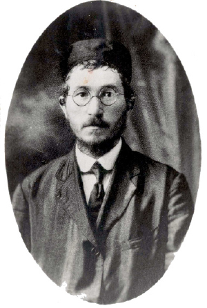

A Fiery Chassid from Tzfas in Frigid Canada
Rabbi Yeshaya Horowitz served as rav of the Chabad community in Tzfas for fifteen years and then thirty years as the rabbi of Winnipeg and western Canada. He was a rav and Chassid, a gaon and mekushar, a model of a Chassidic rav.

***
R’ Yeshaya Horowitz (1883-1978) was one of the great Chabad rabbanim who served as a rav for forty-five years. He came from a pedigreed Chabad family. On his father’s side, his grandfather’s uncle was the Tzemach Tzedek. On his mother’s side he was a descendent of R’ Yisroel Yaffe, a Chassid of the Alter Rebbe. He was appointed as the rav of the Chabad community in Tzfas when he was 25. A year later, he was appointed as a Dayan on the beis din of R’ Yaakov Dovid ben Zev Vilosky (RiDBaZ), who was a genius in his generation and the author of a commentary on Talmud Yerushalmi. He was famous as a judge of truth who helped and did so much for the community.
After fifteen years as rav in Tzfas, he immigrated to Canada where he was appointed as rav of Winnipeg and western Canada. He filled this role for thirty years, in the course of which he did all he could to bolster Judaism; he fought for kashrus and Shabbos, ensured there were kosher mikvaos, and made many trips to distant cities and places in order to strengthen the Jews who lived there. He also wrote s’farim that demonstrate his outstanding scholarship in all areas of Torah, Halacha, Drush, and P’nimius HaTorah.
As a Chassid, he studied Chassidus and even composed a commentary to Tanya. His davening and Avodas Hashem were renowned, and he was among the first Chassidim to ask the Rebbe to accept the nesius.
***
R’ Yeshaya Horowitz was born in Elul 5643/1883 in Tzfas. His father was R’ Asher Yechezkel, a descendent of the Tzemach Tzedek’s family and Admurim of Karlin, Chernobyl and Amdur. He was also an eleventh generation descendent of the Sh’la HaKadosh and bore his name (Yeshaya).
R’ Horowitz was an unusual personality. In his youth, his lofty traits were already apparent. He was diligent in his learning and worked on his middos. He learned day and night and would write for himself rules of conduct as to how to conduct himself in his avodas Hashem.
He learned a lot of the classic Musar works. He was fluent in Reishis Chochma and Chovos HaLevavos as well as the Sh’la (Shnei Luchos HaBris). Between Mincha and Maariv he would learn Mishnayos and review them by heart. He knew five orders of the Mishna by heart (in his senior years, he also learned Taharos by heart).
In his youth, his father was sent abroad by the Chabad community in Tzfas. When he returned home, he found that his son had become proficient in Shas and poskim and was crowned with good manners and Yiras Shamayim. However, he was unfamiliar with Chassidus. His father convinced him to learn Chabad Chassidus and he became knowledgeable in this too. His son, R’ Shmuel, related in his book Yemei Shmuel that his father knew Tanya by heart and wrote a commentary on it which is still in manuscript form.
He learned by R’ Dov Ziman of Warsaw, the student of the Avnei Nezer, and in the yeshiva of the Ridbaz and the yeshiva known as Beis Chasam Sofer in Tzfas. He received smicha in 5663 from R’ Dov Ziman.
His father married him off to Faiga, the daughter of R’ Yitzchok Leberbaum.
In 5664, his father wanted to open a Chabad Yeshiva in Tzfas and appoint his son as the rosh yeshiva, but this plan did not work out due to lack of funding.
R’ Yeshaya’s son Shmuel was born in Shevat 5665. As a little boy, Shmuel suffered from a severe stomach ailment and his father made many vows on his behalf. His son tells about one of these vows, “One vow was not to stop to converse while learning. He had a piece of paper on which he wrote that he asked the person speaking to him not to interrupt his learning. He would show the note to whomever came to talk to him while he learned, and he held to this stipulation until, thank G-d, I was healed.”
He was particular about his son washing his hands as soon as he got up and that his head should be covered while he slept, from a young age. He told his son, “The Tzemach Tzedek would always thank his nursemaid for supervising him and making sure he did not go about with an uncovered head at all, and for washing his hands when he was little. This caused him to have Yiras Shamayim, because these things sanctify a person from when he is little.”
R’ Yeshaya began serving as rav in Tzfas in 5668/1908 and he would discuss legal issues with the great rabbanim of Tzfas. In 5669 they wanted to appoint him as a member of the beis din in Tzfas. He had already received smicha from the Chacham Bashi in Yerushalayim, R’ Nachman Batito, and the Chacham Bashi in Istanbul, R’ Chaim Nachum. In the Ridbaz’s approbation to R’ Horowitz’s book he wrote, “ … He is already a rav for the Chabad flock here [in Tzfas] the holy city, may it be rebuilt, and he learns Torah day and night … for this rav is truly incomparable in our time in Torah and yira throughout the Galil.”
His conduct as the rav of the Chabad community and as dayan was outstanding, as his son described in his book, “My father conducted himself with righteousness, integrity and truth and fulfilled ‘you shall not fear any man,’ and was moser nefesh to judge honestly; he was extremely careful about touching another person’s money and his yes was just, and his no was just, and he kept far away from flattery, lies, and honor-seeking.”
World War I began in 5674, as a result of which there was a terrible famine in Eretz Yisroel. At the beginning of the war, his financial state was fine. He had bought sacks of sugar for a lot of money at the beginning of the war, knowing that the price would go up. He hid the sugar in the home of friends, but the Turkish government, which ruled Palestine at the time, searched for sugar among the citizens. So he had to sell the sugar bit by bit.
When the sugar had all been sold, the Horowitz family began to feel the hunger pangs. R’ Shmuel describes it, “We suffered terribly from hunger, our skin shriveled on our bones and was like wood. The bit of bread was made out of cornmeal which is feed for chickens, and it wasn’t well baked and it destroyed our insides. People died every day, entire families, from the plague of typhus and starvation.”
Salvation came from the fact that R’ Horowitz was a Russian citizen (apparently because his father was Russian born). In those days of starvation, English and Russian citizens who went to the British and English consulates in Lebanon received support from them. R’ Yeshaya went to Beirut for this purpose.
When he was away from home, his children prayed that he return swiftly and in peace. The unique chinuch he gave them caused them to behave in a unique fashion. Shmuel, who was only ten years old, decided to recite Tikkun Chatzos. “I woke up at midnight and woke up my two younger brothers and we did Tikkun Chatzos near the door post, sitting on the ground with ashes on our head. We said the Tikkun Chatzos and Tikkun HaNefesh and other requests. Then we learned until the morning and went to daven vasikin … A short while later, he returned home with a promise for a bit of support for some time.”
The war was at its height and every able-bodied male was sent to fight, and only rabbis were exempt. However, on the city council of Tzfas there were unscrupulous people who tried to convince the Turkish governor to order the rabbis to give large sums of money to the council and the governor in exchange for the exemption from the draft. The rabbis asked R’ Horowitz what to do. He turned to R’ Alfrandi who had up until recently been the Chacham Bashi of Tzfas, and was fired because of the chicanery of the council and the governor. He said not to give them a penny. R’ Horowitz repeated R’ Alfrandi’s answer and they listened.
Members of the council, who realized that their plot was foiled because of R’ Horowitz, were furious. They told the governor, “As long as R’ Horowitz sits at home in peace, you won’t see any money.” The governor decided to arrest all the rabbanim of Tzfas. When they went to arrest R’ Horowitz, he was davening in shul. The mukhtar and two soldiers waited for him outside the shul. When he finished davening, he was arrested and taken to jail. It was only after the intervention of friends and his brother Berel, who was a famous pharmacist and was well-connected, that they decided to transfer him to the police station where the conditions were better. During his stay there, he learned Mishnayos by heart.
In the meantime, his fellow rabbis who were arrested obtained sums of money which they gave the governor. The governor decided that all the rabbis should go to Akko in order to renew their rabbinic certificates. However, the trip entailed danger and great fear, lest they encounter a military company who would draft them on the spot.
R’ Horowitz’s friends came to his rescue again and made sure that the governor would forgo his trip to Akko. However, R’ Horowitz said he would not separate from his fellow rabbis. Despite his family’s importuning, he went to Akko. His brother Berel joined him. Berel’s resourcefulness was a help to them when a legion of soldiers in Akko caught the rabbis and wanted to enlist them. He managed to convince them to release the rabbis. The rabbis returned home before Pesach to the joy of their families and all the Jews of Tzfas.
The Horowitz family continued to suffer from starvation until they were forced to sell their belongings. R’ Horowitz had to travel to Halab in Syria in order to raise money from the Jews who lived there. He suffered a great deal in Halab until he returned home in the winter of 5678, in time for his son Shmuel’s hanachas t’fillin.
Due to events in World War I, the Jews of Yaffo/Jaffa were expelled by the Turkish government. Some of them settled in Tzfas and R’ Yeshaya was appointed as their rav. For Pesach 5678 the rabbanim of Tzfas wanted to permit kitniyos and to allow the purging of metal-plated vessels which are not usually purged for Pesach. This was because of the starvation and privation in the country. Distinguished leaders from Yaffo tried to convince R’ Horowitz to go along with these leniencies, but he remained firm in this case and in all other cases where there was a possible stumbling-block in the observance of halacha.
His family was hard hit by the starvation and diseases during the war. His mother, mother-in-law and another eight members of the extended family died of starvation and disease.
The situation improved somewhat by the end of World War I. A new governor was elected and the city council of Tzfas was changed. The latter dealt more fairly with the rabbanim and the talmidim of the yeshivos. R’ Horowitz took the opportunity to improve the level of Judaism in the city. He made sure they served kosher food in Hadassah hospital and the orphanage and personally put up mezuzos at the hospital.
With great effort, he also enacted an important rule, as his son Shmuel related: “In Hadassah at that time, they did not allow a mohel to circumcise the babies. Only a surgeon who couldn’t even speak a Jewish word was permitted to perform brissin. He would circumcise all the babies without wearing a yarmulke and without a bracha. My father expended much effort to convince the head of the city council that the doctor should no longer circumcise the babies and that the mohel be the great Chassid R’ Naftali Chanalis. R’ Naftali was a clean and organized person as well as a big expert who had already circumcised thousands of babies (for they certainly wouldn’t allow an inexperienced mohel to enter Hadassah).”
R’ Horowitz’s father passed away on 24 Elul 5680/1920 and the administration of the Kollel Chabad fund was transferred to him, although not for long, since parnasa was constrained due to the cessation of wages to the rabbanim. R’ Horowitz, who wanted to provide for his family, had to leave Tzfas to which he felt particularly attached.
After Purim 5682 he boarded a ship for Canada. He went through much travail on this trip. His family, who remained in Eretz Yisroel, worried about him when they did not hear anything from him after much time had elapsed. It was only before Pesach that they received a telegram from him in which he said he arrived safely in Canada. A short time later, they received a ten page letter in which he described what he went through on the voyage. His son Shmuel related, “There was a storm and the ship filled with water. The captain and the sailors had already despaired and the passengers were all sick in their beds. This went on for an entire week.
“On Friday, my father slept and his father came to him in a dream and said, ‘Why are you sleeping? Get up and call out to your G-d,’ and he woke up. He began to say all of T’hillim, verse by verse, in tears, and then he fell asleep again and saw his father and mother in a dream. Hashem helped and the storm died down, but instead of heading toward their destination, they had gone in the opposite direction.
“Then another danger loomed as an iceberg approached the boat. The captain was unable to steer the boat in a different direction. Hashem performed a great miracle and just when the iceberg was close to the boat, it veered slightly and the boat was saved.”
When he arrived in Canada, he settled in Winnipeg where he was appointed the chief rabbi. Since the state of Judaism in western Canada was dismal, he was also appointed rav of western Canada.
He served as chief rabbi of Winnipeg and western Canada for over thirty years (1922-1953). All those years he worked tirelessly to strengthen Judaism in all ways. The Rebbe’s shliach to Winnipeg, R’ Avrohom Altein, tells of R’ Horowitz’s wide-ranging work:
“I arrived here many years after R’ Horowitz left Canada, but I heard a lot about him from the Jews here. He was very tough when it came to kashrus and he fought rabbanim who gave a hechsher for pay without supervising the kashrus at all. He traveled to cities around Winnipeg as well as cities in western Canada and strengthened Judaism there, according to the state of the community.
“The Chabad shul in our city was founded by people who were children and grandchildren of Chabad Chassidim. When he came to the city, he fortified them spiritually. I benefited thereby. When I came here, about twenty years after he left, there were no Lubavitcher Chassidim here, but many practices in the Chabad shul remained, thanks to him, like nusach Ari, farbrengens on Shabbos and special days, etc.”
R’ Horowitz was an outstanding orator and on his trips to Canadian cities he delivered sermons, some of which he transcribed and published. In one of his Yom Kippur sermons in his city, he told the many worshipers that he prayed that every Shabbos would be like Yom Kippur, so that they would all close their stores and come to shul to daven.
What Judaism was like in Canada in those days can be deduced from what he wrote in his book. “There are 20,000 Jews who have many institutions: shuls, a Talmud Torah, an orphanage, and mikvaos. In one of them, I was able to institute a double mikva (i.e. according to the Chabad practice of having the immersion pit on top of the rainwater pit) according to all the stringencies of the poskim z”l.” There were also mosdos Torah in his city, but he did not suffice with them. When he had yechidus with the Rebbe Rayatz, he said he wanted to found a Yeshivas Tomchei T’mimim in his city. The Rebbe agreed and asked the administration in Montreal to help with this.
While in Canada, he published two of his books, Pardes Ha’Aretz (Halachic responsa, drushim in Halacha and Agada on Torah and holidays according to Chabad Chassidus, and more) and Yavo Shilo (Halachic responsa); it discusses the laws pertaining to the observance of Yom Tov Sheini for someone who lives in Eretz Yisroel who is visiting abroad, the history of the Jewish settlement in Tzfas, and a compilation of sermons that he delivered in shuls in Canada. This latter book received the approbations of great rabbanim. Our Rebbeim are often mentioned in his Halachic responsa and drushim.
In 5704/1944, he began sending questions in learning and Halacha to the Rebbe MH”M, then known only as the son-in-law of the Previous Rebbe. One of the responses was four pages long and is printed in Igros Kodesh volume 1.
Over the years, he corresponded a lot with the Rebbe on complicated and deep topics in learning: Mikvaos, Gittin, explanations in the Zohar, and many other subjects.
When he sent his Pardes Ha’Aretz to the Rebbe, the Rebbe sent him a letter with comments and explanations on what he wrote. Among other things, the Rebbe wrote that his own father, R’ Levi Yitzchok, and his father’s brother, R’ Shmuel, were married to sisters; this seems to go against what R’ Yehuda HaChassid writes in his will. The Rebbe explained it thus: My father and uncle married two sisters as per the directive of the Rebbe Rashab and his instruction not to live in the same city. In this book it mentions his earlier book Yavo Shilo, and the Rebbe wrote that he did not have it. That was in Elul 5709/1959, and by Rosh Chodesh Cheshvan we find a letter in which the Rebbe writes that he received the book and “many thanks for this precious gift.”
R’ Horowitz wrote down many stories about the Rebbeim which were printed in Migdal Oz as a separate chapter.
He returned to Eretz Yisroel in 5713 and the Rebbe urged him to continue his communal work since Hashem gave him the gift of the power of persuasion, especially in communal work in spreading the wellsprings.
In his final years, he lived with one of his sons in Rechovos. His diligence in learning that began in his childhood continued until his last day. He learned Nigleh and Chassidus while overcoming all the difficulties and pain that were his lot in his final years.
In 5716/1956, at the age of 73, the Rebbe blessed him with long life. This bracha was fulfilled and R’ Yeshaya Horowitz passed away on 22 Teves 5738/1978 at the age of 94. He was buried in the holy city of Tzfas.
SPECIAL CONNECTION TO HOLY SITES
R’ Horowitz had a special feeling toward the graves of tzaddikim. Throughout the years that he lived in Tzfas, during the summer he would live in Miron with his son Shmuel, where they rented a room in an old age home in the village of Miron. Every day, he would take his son to the gravesite of R’ Shimon bar Yochai where they learned and davened. He would also go on special dates in the calendar like Erev Rosh Chodesh, Lag B’Omer, the month of Elul, etc.
He also had a special feeling for the gravesite of the Arizal, as his son Shmuel relates:
“It was my father’s custom as far back as I can remember that we would all go on 5 Av to daven at dawn in the Arizal’s shul. We had a regular spot and we would daven there with energy and enthusiasm as we would on a Yom Tov. Then we would go to the holy resting place and my father would say a lot of T’hillim with enthusiasm and great inspiration. We would tarry there until nearly midday.”
In 5716 he authored a work Eden MiTziyon about the holy sites in the Holy Land.
MYSTERY MAN
R’ Asher Yechezkel Horowitz, one of the Chabad Chassidim in Tzfas, traveled abroad on behalf of the Chabad community on a number of occasions. On one of these trips, a miracle occurred, as his grandson R’ Shmuel recounted:
I will tell you a miracle that I heard happened to my grandfather in Russia when he traveled from a big city by train which had many cars. He was sitting in one of the first cars and someone came and chased him out and he went to another car. There too, the man chased him away. He had to go to a car further back and the man went there too and chased him away. This happened again and again until he went to the last car from where he was not chased.
As the train continued to travel it collided with another train coming in the opposite direction and the train was demolished and all the people sitting in the front cars were killed. My grandfather, who was in the last car, was not killed; he merely fell from the train and was saved. Who knows who that man was who chased him over and over in order to save him.
DEVOUT SERVANT OF G-D
T’filla, saying T’hillim, brachos before eating – R’ Horowitz said it all with a special enthusiasm. His longest t’filla was the night of Rosh HaShana, as his son Shmuel relates:
“My father spent hours on the Shmoneh Esrei of the first day of Rosh HaShana with sweetness and chayus until the other worshipers had already finished davening and went home to eat their meal. They returned after the meal to say ‘shana tova’ to my father and my father would still be standing and davening Shmoneh Esrei.
“In general, my father’s avoda was with sweetness and chayus. His face was always red after he davened and his Yiras Shamayim was apparent on his face. He said the brachos before reading the Megilla with great inspiration like the brachos of the blowing of the shofar. During Elul he would recite Zohar with unimaginable inspiration and chayus.”
His son goes on to describe his father’s Avodas Hashem, according to the seasons of the year, which stood out in its chayus and Chassidic enthusiasm. He concludes, “It is impossible to tell all aspects of his Avodas Hashem and Yiras Shamayim.”
FAMILY LINEAGE
R’ Yeshaya Horowitz wrote of his family lineage which could be traced back to the sister of the Tzemach Tzedek:
My father’s father’s name was Yeshaya, and he lived in Beshenkowitz in the Vitebsk district. He was very wealthy and was one of the great Chassidim and mekuravim of my great-uncle the Tzemach Tzedek. He was an old man and still had no children. One time, when he was sitting in the beis midrash of the Tzemach Tzedek and reviewing Chassidus together with his friends, a shliach from the Rebbe called him over to the Rebbe.
The Rebbe said to him: You should know that it occurred to me while davening the bracha of Ata Chonein that you should divorce your wife and marry the daughter of my sister (Devora, who was a sister of the Tzemach Tzedek’s through his father), my Beilka (that is how the Tzemach Tzedek called her because she was orphaned as a girl and he raised her like a daughter) and then you will have children.
And so it was that based on what the Rebbe said his wife agreed to a divorce, and he gave her half of his wealth and he married the Tzemach Tzedek’s niece (I don’t remember whether she was widowed or divorced). The Tzemach Tzedek said a maamer, “Rani Akara” and she gave birth to five sons. Shortly after the birth of the fifth son, he passed away on Erev Shabbos, 26 Adar I 5624 and was buried in the city where he lived.
(The son of R’ Yeshaya, my grandfather R’ Asher Yechezkel, heard this story from the mashpia R’ Yechezkel Yanover who was in the beis midrash when the Tzemach Tzedek called for him).
My grandmother Beila, continued R’ Yeshaya Horowitz in his book, who was widowed with five children, returned to her uncle the Tzemach Tzedek’s house and spent some time there. Then it was decided to send her to Eretz Yisroel and there was an exchange of letters with the holy Rabbi Aharon of Chernobyl and the holy Rabbi Aharon of Karlin (who were her relatives) and with other tzaddikim who were her relatives. They all committed to supporting the family’s settling in Eretz Yisroel.
Upon arriving in Eretz Yisroel, they settled in Tzfas; all the great personages of the city respected them greatly for their holy lineage.
R’ Yeshaya (the grandson), in his Eden MiTziyon, states his lineage in all its branches as well as the lineage of the father of the Tzemach Tzedek, R’ Sholom Shachna, who was the grandfather of R’ Yeshaya’s grandmother. He writes that the father of the Tzemach Tzedek was related to the author of the Metzudas Dovid and Metzudas Tziyon and he is descended from Dovid HaMelech. This is how Chassidim learned that the Rebbe MH”M, who is related to the Tzemach Tzedek, son after son, is also descended from Dovid HaMelech, Moshiach ben Dovid.
R’ Asher Yechezkel married Elka, the daughter of R’ Yisroel Dov Yaffa, one of the leaders of the Chabad community in Tzfas. His father-in-law committed to supporting him for a number of years, but he died of an illness on 27 Tishrei 5636. That is how R’ Asher Yechezkel became the head of the family and the leader of the Chabad community which began, at that time, to settle in Tzfas.
Berger. "A Fiery Chassid from Tzfas in Frigid Canada." Beis Moshiach, no. 899 (October 22, 2013).